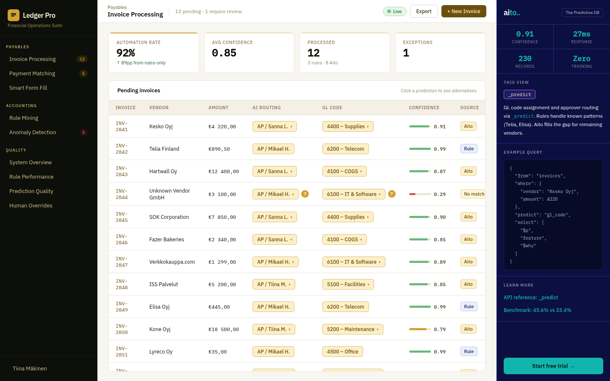
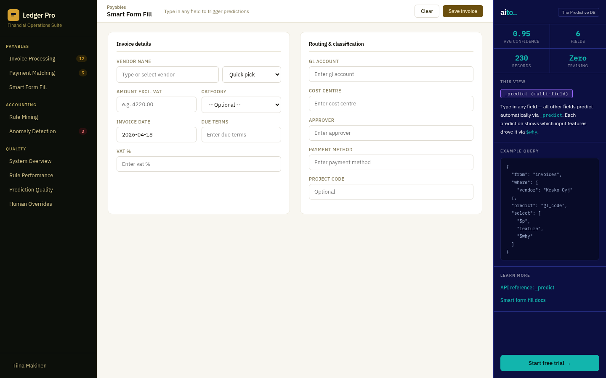
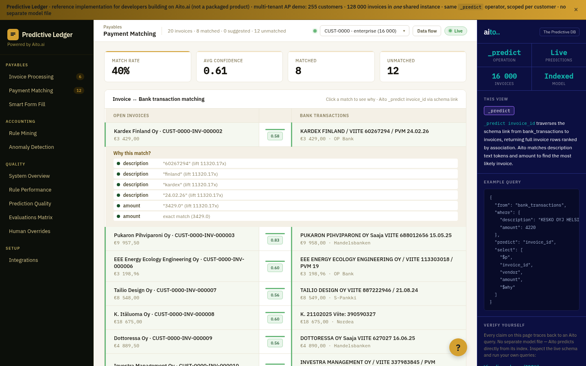
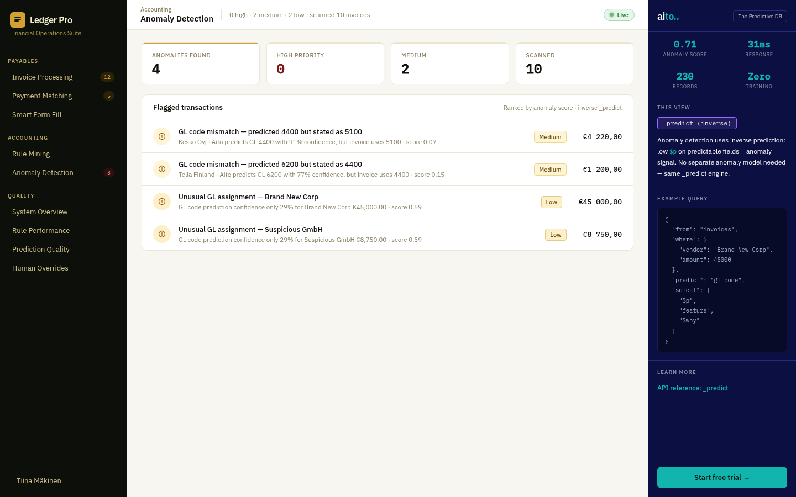
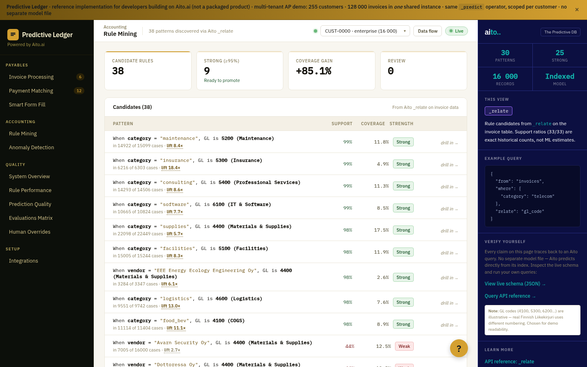
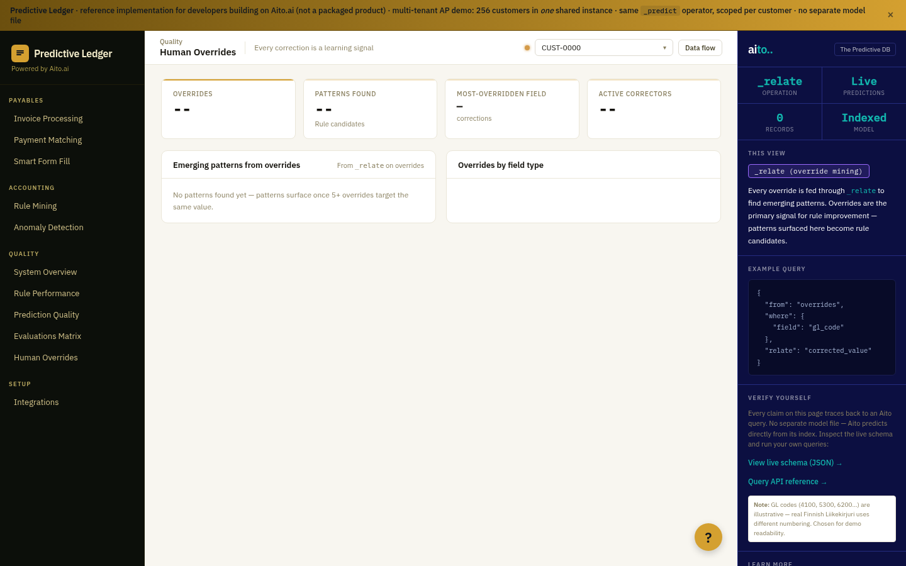
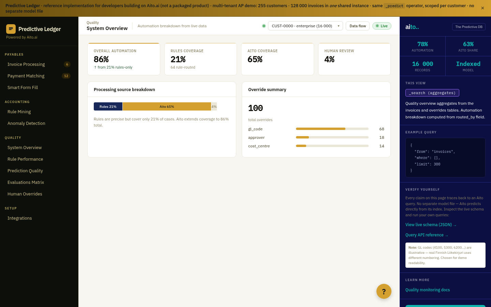
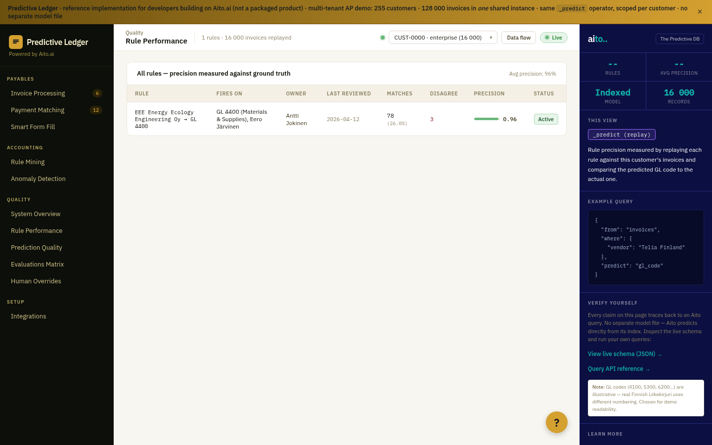
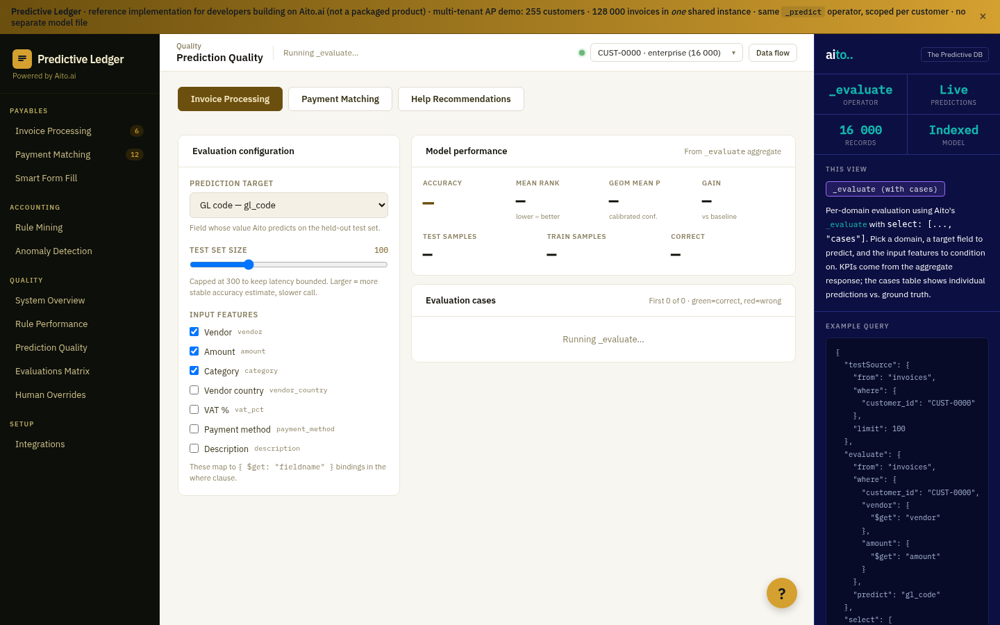

Invoice Processing
GL code + approver predictions ranked by historical confidence, with $why factor cards.
View implementationcustomer_id in the where clause.
No model training, no retraining, no per-tenant pipeline.
_predict
_relate
_recommend
_evaluate

GL code + approver predictions ranked by historical confidence, with $why factor cards.
View implementation
Type any field, the rest predict. Six fields populate from one vendor click.
View implementation
Bank descriptions to invoices via _predict invoice_id over the schema link.

Inverse prediction: low confidence on a normally-predictable field flags it.
View implementation
_relate finds patterns with exact support ratios. Expand rows to drill into compounds.

Two-pass _relate with link traversal mines corrections for input → output rules.

Every prediction logged: predicted vs accepted, with per-field accept rate. SOX-grade evidence.
View implementation
Mined rules replayed against history: precision, coverage, drift over 12 weeks.
View implementation_evaluate accuracy with per-case results.
_evaluate with per-case green/red diff. 98% GL accuracy on CUST-0000 (+44pp baseline).
Kardex Finland Oy under CUST-0000 → GL 4400. Under CUST-0003 → GL 6200. Where-clause isolation.
View implementationAutomation breakdown — rules, Aito, human review — per customer with override patterns.
View implementationSmall customers get low confidence, not fake confidence. The system says "I don't know yet."
View implementation_recommend with goal: {clicked: true}. Articles users tend to click on this page rise to the top.
Session chaining via prev_article_id. Same operator, one extra constraint.
Aito marks the matched description tokens in their original context. Catering order drove this prediction.
View implementationGlobal articles + customer-specific internal docs ("At Tornio Retail Oy Ab, cost centres are mapped…").
View implementation